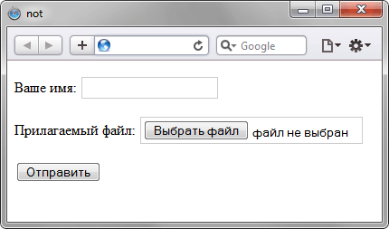

Псевдокласс :not
Псевдокласс :not задаёт правила стилей для элементов, которые не содержат указанный селектор.
Синтаксис
Селектор:not(<Селектор>) { ... }В качестве селектора могут указываться псевдоклассы, теги, идентификаторы, классы и селекторы атрибутов. Нельзя использовать псевдокласс :not (конструкция :not(:not(...)) запрещена) и псевдоэлементы.
Пример
<!DOCTYPE html>
<html>
<head>
<meta charset="utf-8">
<title>not</title>
<style>
input:not([type="submit"]) {
border: 1px solid #ccc;
padding: 3px;
}
</style>
</head>
<body>
<form>
<p>Ваше имя: <input name="user"></p>
<p>Прилагаемый файл: <input type="file" name="file"></p>
<p><input type="submit" value="Отправить"></p>
</form>
</body>
</html>В данном примере стиль применяется ко всем элементам <input> за исключением того, в параметрах которого установлено type="submit" (кнопка «Отправить»). Результат примера показан на рис. 1.

Рис. 1. Результат использования псевдокласса :not
Спецификация
| Спецификация | Статус |
|---|---|
| Selectors Level 4 | Рабочий проект |
| Selectors Level 3 | Рекомендация |
Браузеры
| Internet Explorer | Chrome | Opera | Safari | Firefox |
| 9 | 1 | 9.5 | 3.2 | 1 |
| Android | Firefox Mobile | Opera Mobile | Safari Mobile |
| 2.1 | 1 | 10 | 3.2 |